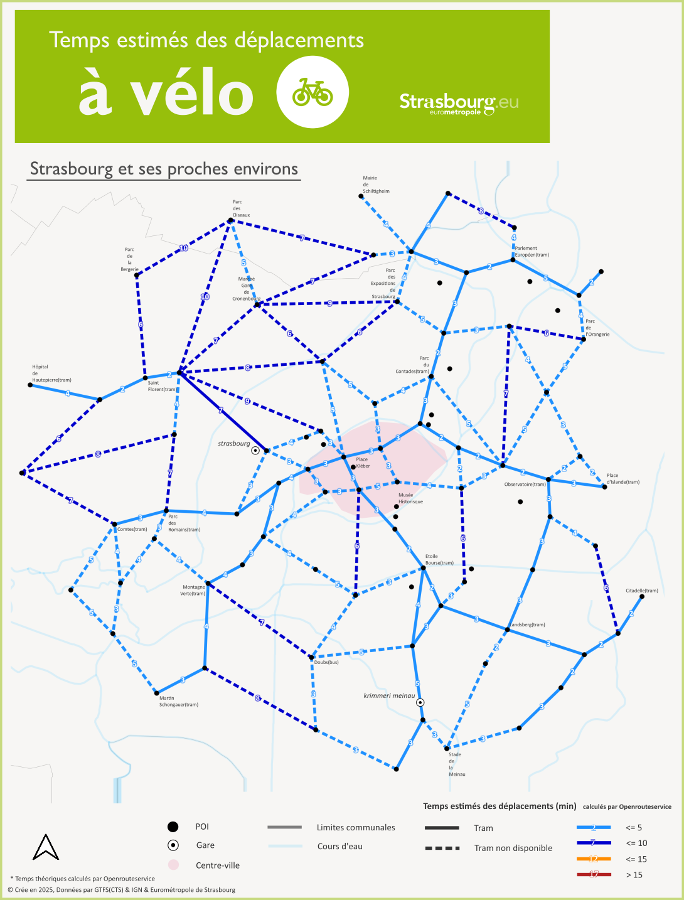
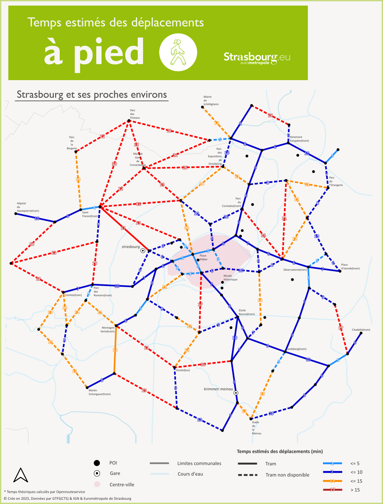
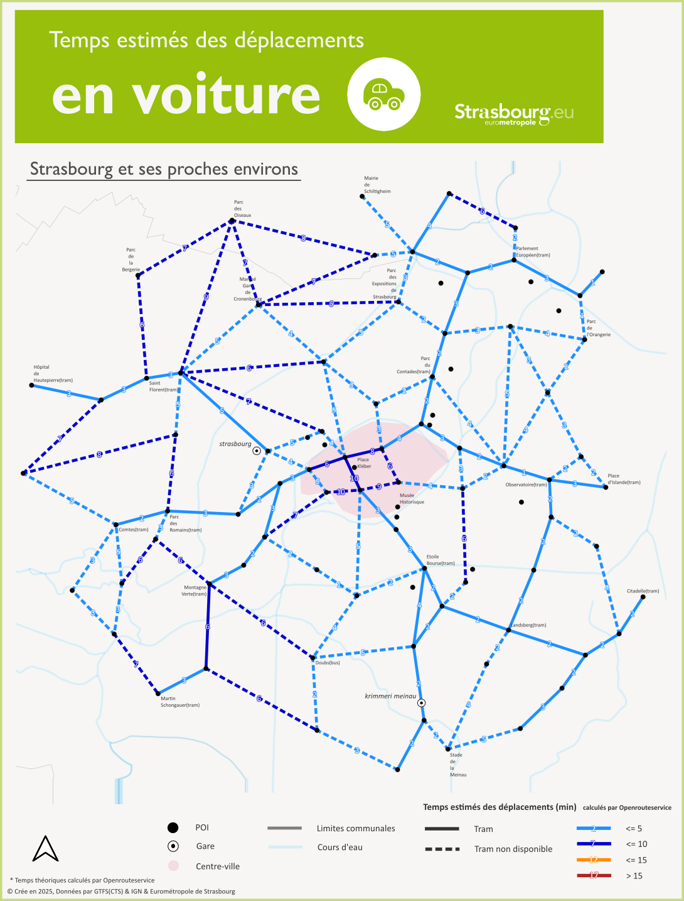
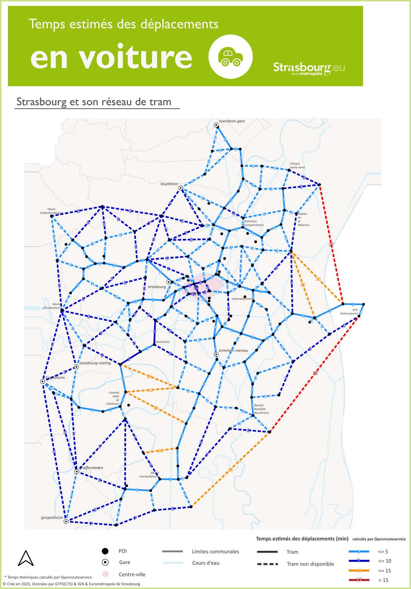
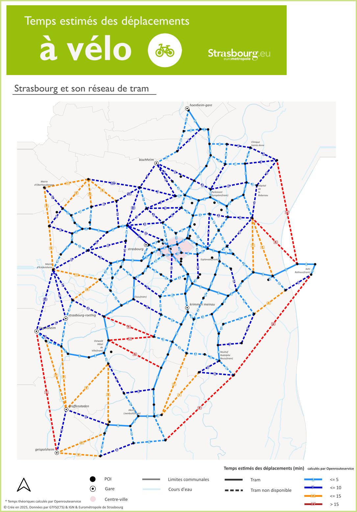
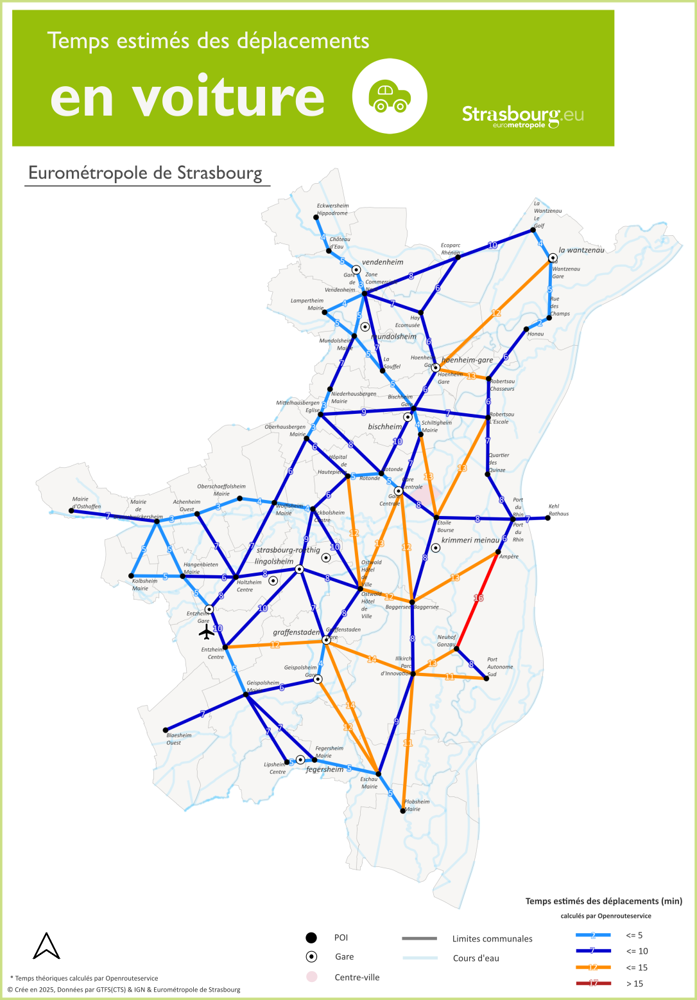
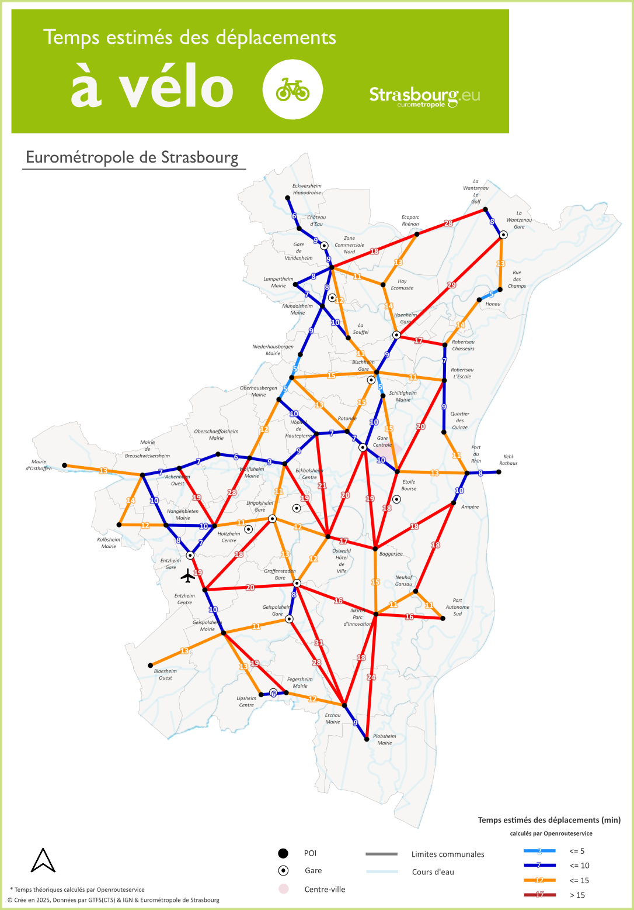

Cartes statiques des temps des déplacements à pied, à vélo et en voiture sur le territoire de l'Eurométropole de Strasbourg
Comparez les différences des temps entre différents modes en glissant le curseur latéral !
1.a. Strasbourg : à pied / vélo
1.b. Strasbourg : vélo / voiture
2. Réseau tram : vélo / voiture
3. Eurométropole : vélo / voiture
1.a. Strasbourg et ses proches environs : à pied et à vélo


1.b. Strasbourg et ses proches environs : à vélo et en voiture

2. Strasbourg et son réseau de tram : à vélo et en voiture

<
3. Eurométropole de Strasbourg : à vélo et en voiture

